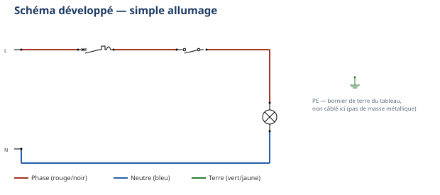
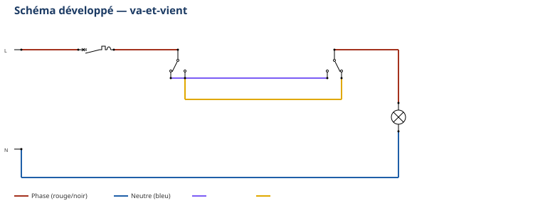

Thème / DomaineÉlectricité simple et cycle frigorifique — les bases
Module atelier S2-E1 · 4 h × 2 passagesMontages domestiques et mesures U/I/R au multimètre
SéquenceS2 · semaines 5-6 (S2 clôt sur É1, semaine 7)
Nom________________
Prénom________________
Date (passage 1 / passage 2)_______ / _______
Positionnement01234
Mise en situation professionnelle
Ordre d'intervention n° OI-2026-S2-E1-01 : le professeur, responsable de l'atelier, vous confie à nouveau
la remise en état électrique du parc de platines. Cette fois, vous allez plus loin qu'en S1 : vous
câblez un montage domestique et vous mesurez vous-même, avec le multimètre, les grandeurs
U (tension), I (intensité) et R (résistance) sur ce montage que vous venez de câbler — plus une simple
vérification « ça marche », de vraies valeurs comparées à ce qui est attendu. Ce module vous prépare
directement au poste ÉLEC de l'évaluation É1 (semaine 7) : montage domestique + mesures U/I/R, exactement
ce que vous faites ici, deux fois : passage 1 en semaine 5, passage 2 en semaine 6.
Tâches
T10 Repérer, raccorder, assembler les réseaux fluidiques, aérauliques et électriques T11 Contrôler les circuits hors fonctionnement T12 Respecter les consignes de sécurité et protéger la zone de travail
Savoirs
S5.6 Réseaux, matériels électriques et de régulation augmenté
Savoir-être
Sécurité électrique sans rappel · rigueur du câblage · honnêteté des relevés de mesure
Compétences (≤ 4)
ConfortementC3.6 Câbler, repérer, connecter les liaisons électriques et électroniques ConfortementC4.5 Mesurer, comparer des grandeurs
Ce qui change depuis S1 — En S1, câbler (S1-E1) et mesurer (S1-E2) étaient
deux modules séparés, sur des platines différentes : vous câbliez sans vraiment mesurer, puis vous
mesuriez sur des montages déjà préparés par le professeur, pas les vôtres. Aujourd'hui, vous câblez ET
mesurez sur le MÊME montage, celui que vous venez vous-même de câbler : la moindre erreur de câblage se
voit tout de suite dans la mesure. Autre changement : le schéma n'est plus légendé. Vous devez retrouver
seul(e), de mémoire, les éléments Q1/S1/H1 (simple allumage) et S1/S2/navettes (va-et-vient) appris en S1-E1.
La mise sous tension reste, comme en S1, un geste exclusivement professeur.
Passage 1 / Passage 2 — ce qui change
Passage 1 (semaine 5) — montage refait + mesures de tension : vous recâblez le simple allumage à
partir du schéma non légendé, réalisez votre contrôle hors tension, puis, après mise sous tension par le
professeur, vous mesurez la tension en plusieurs points de votre propre montage. Pas de mesure
d'intensité ni de résistance ce jour-là. Passage 2 (semaine 6) — mesures complètes U/I/R en autonomie guidée : vous recâblez le va-et-vient
(le montage le plus complexe de S1-E1), avec moins d'aide et plus vite, puis vous réalisez sur ce nouveau
montage les 4 mesures : continuité, tension, résistance d'un récepteur hors tension, et
intensité (avec, comme toujours, le contrôle du professeur avant toute remise sous tension). C'est
exactement la forme du poste ÉLEC de l'évaluation É1.
Objectifs — je serai capable de…
recâbler un montage domestique (simple allumage puis va-et-vient) à partir d'un schéma non
légendé, en retrouvant seul(e) les éléments appris en S1-E1 ;
réaliser un contrôle de continuité hors tension avant toute mise sous tension, réalisée uniquement
par le professeur ;
mesurer une tension en service, en plusieurs points de mon propre montage câblé, et comparer à la
valeur normative ;
mesurer la résistance d'un récepteur hors tension et comparer la valeur lue à une valeur attendue ;
mesurer une intensité en respectant impérativement le branchement en série hors tension, avec
contrôle du professeur avant toute remise sous tension — jamais l'ampèremètre en parallèle.
Prérequis — je sais déjà…
Ce module est un module d'aisance : je reviens sur des gestes déjà vécus deux
fois en S1, avec moins d'aide. Je sais déjà câbler un simple allumage et un va-et-vient en respectant les
couleurs normalisées (S1-E1) ; je sais manipuler le multimètre et nommer ses 4 fonctions Ω, continuité,
V, A (S1-E2) ; je sais réaliser seul(e) une consignation/vérification d'absence de tension (VAT) avant
toute intervention ; je connais le geste interdit central : jamais de mesure d'intensité en parallèle.
Si un de ces prérequis me manque encore, je le signale au professeur avant de commencer : un rappel court est
possible pendant l'exercice au fil de l'eau, jamais pendant la mise en sécurité de la zone.
Matériel
Platine en bois équipée d'un rail oméga (× 1 par poste)
Disjoncteur magnétothermique ou porte-fusible unipolaire Ph + N (× 1)
Interrupteur simple (passage 1) puis 2 interrupteurs va-et-vient (passage 2)
Support de lampe (× 1) + ampoule adaptée à la tension d'alimentation, ou petit récepteur résistif pour la
mesure de résistance
Bornier de phase, bornier de neutre, bornier de terre (× 1 chacun)
Vis à bois pour la fixation du matériel (consommable)
Fils électriques souples, section du poste école (à faire valider par le professeur), couleurs
normalisées : rouge ou marron (phase), bleu (neutre), vert/jaune (terre) (consommable)
Tournevis plat et tournevis cruciforme, pince à dénuder, pince coupante
Multimètre numérique + jeu de cordons de mesure (rouge + noir)
Sécurité électrique — un rituel déjà acquis, qui ne s'allège jamais
Vous connaissez déjà la consignation et la vérification d'absence de tension (VAT)
depuis S1. Aujourd'hui, personne ne vous les redémontre : vous les appliquez seul(e), sans rappel.
Un seul point ne change jamais, aux deux passages : la mise sous tension reste un geste exclusivement
professeur.
Risque
Parade
Choc électrique par contact direct avec une pièce sous tension
Ne jamais toucher un fil ou une platine sans avoir vérifié l'absence de tension (VAT). Travailler toujours hors tension pour tout câblage.
Court-circuit par un câblage non conforme au schéma
Respecter strictement le schéma retrouvé de mémoire et les couleurs normalisées. Faire contrôler le câblage par le professeur avant toute mise sous tension.
Destruction du multimètre ou projection par mesure d'intensité mal branchée
Ne jamais brancher l'ampèremètre en parallèle : cela court-circuite la source. L'ampèremètre se branche toujours en série, en coupant le circuit pour l'y insérer.
Mesure de résistance faussée ou dangereuse
Toujours mesurer une résistance sur un récepteur déconnecté et hors tension, jamais raccordé à une source.
Mise sous tension accidentelle pendant le câblage ou la mesure d'intensité
Disjoncteur du poste maintenu ouvert pendant tout le câblage. Seul le professeur ferme le disjoncteur, après contrôle systématique.
La consignation — rituel NFC 18-510, appliqué sans rappel
1. Couper — ouvrir le disjoncteur du poste.
2. Vérifier l'absence de tension (VAT) — contrôler au multimètre, position voltmètre.
3. Condamner / signaler — le professeur garde la main sur la mise sous tension.
4. Travailler hors tension — je câble, je mesure la continuité et la résistance, toujours
disjoncteur ouvert.
Gestes interdits
Jamais toucher un fil ou une platine sans avoir vérifié l'absence de tension ;
Jamais câbler ou modifier une platine sous tension ;
Jamais mettre une platine sous tension moi-même — seul le professeur le fait, après contrôle ;
Jamais brancher l'ampèremètre en parallèle — toujours en série, hors tension, avec contrôle
professeur avant remise sous tension ;
Jamais mesurer une résistance sur un composant encore raccordé à une source.
Avant de commencer, complétez la fiche de sécurité à cocher ci-dessous et
faites-la viser par le professeur. Tenue et EPI exigés :
Chaussures de sécurité ; Pas de bijoux ni de montre ; Manches ajustées ; Cheveux longs attachés.
Fiche de sécurité à cocher — document CAP, F. Henninot.
🚨 En cas d'incident — couper (interrupteur général ou arrêt d'urgence
de l'atelier, localisé dès l'entrée), alerter immédiatement le professeur, ne jamais déplacer un
camarade électrisé sans certitude sur son état. La trousse de secours est localisée dès l'entrée dans l'atelier.
PASSAGE 1 · SEMAINE 5 · JALON A — recâblage du simple allumage — ≈ 60 min
1. Lire le schéma — sans légende
Observez le schéma ci-dessous. Il n'est plus légendé : à vous de retrouver,
de mémoire, les 3 éléments que vous avez appris en S1-E1 et leur rôle.

Simple allumage — schéma réduit, sans repères. Le schéma complet figure en annexe pleine
page (annexe 1) : gardez-le sous les yeux pendant le câblage.
Question — Sans regarder vos notes de S1, nommez les 3 éléments du schéma
et le rôle de chacun : complétez les repères directement sur le schéma. Puis suivez du doigt le chemin du courant
quand l'interrupteur est fermé.
2. Préparer la platine
☐ 1. Vérifier que la platine est hors tension (disjoncteur du poste ouvert)
☐ 2. Positionner le rail oméga selon les cotes indiquées par le professeur
☐ 3. Positionner le disjoncteur, l'interrupteur et le support de lampe selon le schéma d'implantation
☐ 4. Fixer chaque élément à la vis, sans forcer
Avant de fixer définitivement, dessinez ci-dessous le schéma d'implantation de
votre platine, vu de dessus, avec les cotes mesurées.
Schéma d'implantation de ma platine — vue de dessus, cotes mesurées
3. Câbler et contrôler hors tension
☐ 1. Raccorder la phase, l'interrupteur puis la lampe, dans l'ordre retrouvé au schéma
☐ 2. Raccorder le neutre directement du bornier à la lampe
☐ 3. Vérifier que chaque connexion est bien serrée et conforme aux couleurs normalisées
Mesure de continuité (multimètre, disjoncteur ouvert)
Interrupteur
Valeur attendue
Valeur mesurée
Conforme ?
Continuité du circuit de la lampe
fermé
proche de 0 Ω (continuité)
☐ Oui ☐ Non
Continuité du circuit de la lampe
ouvert
résistance infinie (circuit ouvert)
☐ Oui ☐ Non
Si une valeur ne correspond pas à celle attendue,
signalez-le vous-même au professeur avant de l'appeler pour le contrôle final : l'honnêteté du contrôle fait
partie de l'évaluation du savoir-être. Une fois votre contrôle conforme, appelez le professeur : lui seul
ferme le disjoncteur.
PASSAGE 1 · SEMAINE 5 · JALON B — mesures de tension — ≈ 65 min
Mise sous tension — uniquement par le professeur
Le professeur ferme le disjoncteur de votre poste après avoir vérifié votre contrôle
hors tension. Le voltmètre se branche toujours en parallèle (« en dérivation ») : il se pose à côté
du circuit, sans le couper.
☐ 1. Sélectionner la fonction voltmètre (V~ pour le secteur) sur la molette
☐ 2. Choisir un calibre adapté (le plus grand d'abord si vous doutez)
☐ 3. Poser les deux pointes de touche en parallèle sur les deux points à mesurer, sans toucher les parties métalliques nues
☐ 4. Lire et noter la valeur affichée
Fiche de relevés — tension, sur MON montage
Point de mesure
Tension lue (V)
Entre phase et neutre, avant le disjoncteur (amont)
________ V
Entre phase et neutre, après le disjoncteur (aval)
________ V
Aux bornes de la lampe, interrupteur fermé
________ V
Aux bornes de la lampe, interrupteur ouvert
________ V
Repère : la tension nominale du secteur français
entre phase et neutre est de 230 V (valeur normative) ; la valeur exacte lue sur votre poste est à faire
confirmer par le professeur.
Question — Comparez votre relevé à celui d'un binôme voisin qui a câblé la
même chose que vous. Si une valeur diffère nettement de 230 V ou de 0 V attendu, à quoi pensez-vous que cela
peut être dû sur VOTRE câblage ?
Question — Pourquoi la tension aux bornes de la lampe est-elle nulle quand
l'interrupteur est ouvert, alors qu'elle ne l'est pas juste avant le disjoncteur ?
⚠ Rappel — fin du passage 1 — Avant de ranger, remettez votre platine hors
tension (disjoncteur ouvert, débranché) : c'est vous qui coupez, jamais le professeur seul en votre absence.
Rendez-vous en semaine 6 pour le passage 2 (va-et-vient + mesures complètes U/I/R).
PASSAGE 2 · SEMAINE 6 · JALON A' — recâblage du va-et-vient — ≈ 40 min
Ce qui change par rapport au passage 1 — Le va-et-vient est le montage le
plus complexe de S1-E1 : 2 interrupteurs va-et-vient (S1, S2) et 2 fils navettes remplacent
l'interrupteur simple. Moins d'aide, plus vite : personne ne vous redémontre la consignation, le schéma
reste non légendé, et le temps de câblage est réduit par rapport au passage 1.

Va-et-vient — schéma réduit, sans repères. Schéma complet en annexe pleine page (annexe 2).
Question — De mémoire, repérez sur le schéma les deux fils navettes entre
S1 et S2 : complétez les repères directement sur le schéma. Pourquoi en faut-il exactement deux, et pas un seul ?
Préparer et câbler
☐ 1. Vérifier que la platine est hors tension (disjoncteur du poste ouvert)
☐ 2. Positionner le disjoncteur, les 2 interrupteurs va-et-vient et le support de lampe, selon le schéma
d'implantation retrouvé de mémoire
☐ 3. Fixer chaque élément à la vis, sans forcer
☐ 4. Raccorder la phase à la borne commune du premier interrupteur
☐ 5. Raccorder les deux navettes entre les deux interrupteurs (bornes de contact, pas la commune)
☐ 6. Raccorder la borne commune du second interrupteur à la lampe
☐ 7. Raccorder le neutre directement du bornier à la lampe
☐ 8. Vérifier que chaque connexion est bien serrée et conforme au schéma
Contrôle hors tension
Position des 2 interrupteurs
Valeur attendue
Valeur mesurée
Conforme ?
Positions « alignées » (circuit fermé)
proche de 0 Ω (continuité)
☐ Oui ☐ Non
Positions « opposées » (circuit ouvert)
résistance infinie (circuit ouvert)
☐ Oui ☐ Non
Si le résultat ne correspond pas à celui attendu,
ne cherchez pas à « forcer » un branchement : signalez l'écart au professeur, c'est souvent une navette
inversée. Une fois votre contrôle conforme, appelez le professeur : lui seul met sous tension.
PASSAGE 2 · SEMAINE 6 · JALON B' — mesures complètes U / I / R — ≈ 85 min — autonomie guidée
Vous enchaînez maintenant les 4 mesures sur votre va-et-vient, dans l'ordre du
moins risqué au plus exigeant : continuité (déjà faite ci-dessus, hors tension), tension, résistance
d'un récepteur hors tension, puis intensité. Le professeur valide sans démontrer, sauf au geste
d'intensité.
1. Tension — après mise sous tension par le professeur
Point de mesure
Tension lue (V)
Entre phase et neutre, en amont du disjoncteur
________ V
Aux bornes de la lampe, S1 et S2 alignés (circuit fermé)
________ V
Aux bornes de la lampe, S1 et S2 opposés (circuit ouvert)
________ V
Repère : 230 V nominal entre phase et neutre
(valeur normative) ; valeur exacte du poste à faire confirmer.
2. Résistance d'un récepteur hors tension
Avant de refermer définitivement le circuit, isolez le récepteur (la lampe ou
le composant résistif indiqué par le professeur) — deux bornes seules, déconnectées de tout circuit — et
mesurez sa résistance hors tension, disjoncteur ouvert.
☐ 1. Vérifier que le récepteur est hors tension et déconnecté du reste du circuit
☐ 2. Sélectionner la fonction ohmmètre (Ω), calibre le plus grand d'abord
☐ 3. Poser une pointe de touche sur chaque borne du récepteur, lire et noter la valeur
Récepteur mesuré
Calibre utilisé
Valeur lue (Ω)
Valeur attendue
Lampe ou composant du poste
________
________ Ω
selon le montage du poste, à faire valider par le professeur
3. Intensité — geste interdit central du module
🚫 RÈGLE DE SÉCURITÉ RENFORCÉE — ne change jamais entre les deux passages
🚫 Geste interdit — Ne jamais brancher l'ampèremètre en parallèle.
Sa résistance interne très faible provoquerait un court-circuit pouvant détruire l'appareil ou provoquer
une projection. L'ampèremètre se branche toujours en série, en coupant le circuit pour l'y insérer.
☐ 1. Mettre le poste hors tension avant toute manipulation
☐ 2. Sélectionner la fonction ampèremètre (A~), déplacer le cordon rouge sur la douille A adaptée
☐ 3. Couper le fil du circuit à l'endroit indiqué par le professeur et insérer le multimètre en série
☐ 4. Vérifier une dernière fois que rien n'est sous tension
Contrôle professeur obligatoire avant remise sous tension
☐ Montage en série vérifié par le professeur ☐ Calibre adapté vérifié ☐ Aucune pointe de touche ne se touche
Visa professeur : ________________ Heure : ________________
☐ 5. Remettre le poste sous tension seulement après le visa du professeur
☐ 6. Lire et noter la valeur affichée, puis remettre hors tension avant de retirer le multimètre
Récepteur mesuré
Calibre utilisé
Intensité lue (A)
Lampe ou récepteur du poste
________
________ A
Dessinez le montage : la source, le récepteur, et le multimètre inséré en
série au bon endroit.
Cadre de dessin — montage en série de l'ampèremètre
Question de synthèse — Parmi les 4 mesures d'aujourd'hui, lesquelles se
font hors tension et lesquelles se font sous tension ? Pourquoi cette différence, à votre avis ?
☐ 1. Remettre la platine hors tension (disjoncteur ouvert, débranchée)
☐ 2. Remettre la molette du multimètre sur OFF, débrancher et ranger les cordons sans coude serré
☐ 3. Ranger les fils, sans les plier de façon serrée ; jeter les chutes dans le bac approprié
☐ 4. Ranger l'outillage (tournevis, pinces, multimètre) à son emplacement
☐ 5. Vérifier que le poste est propre et dégagé pour le poste suivant
Jalons franchis
☐ Passage 1 : simple allumage recâblé, contrôle hors tension conforme, tension mesurée en plusieurs points
☐ Passage 2 : va-et-vient recâblé, continuité + tension + résistance + intensité mesurées, contrôle professeur
du montage série obtenu avant remise sous tension
Visa professeur (passage 1) : ________________ Visa professeur (passage 2) : ________________
Grille d'évaluation
Échelle FrigorX : 0 Non évalué · 1 Non acquis · 2 En cours
d'acquisition · 3 Acquis · 4 Parfaitement maîtrisé. Statut du jour : Confortement (poids réduit — jamais
Évaluation dans ce module ; l'Évaluation officielle sur ce contenu, c'est É1, semaine 7).
Compétence / savoir-être
Ancrage
0 Non évalué
1 Non acquis
2 En cours
3 Acquis
4 Maîtrisé
C3.6 Câbler, repérer, connecter les liaisons électriques et électroniques
sur T10 · T12 · S5.6
Compétence non observée ce jour.
Câblage non conforme au schéma non légendé, malgré aide, ou consignation non respectée.
Câble avec l'aide du professeur pour retrouver le schéma ou positionner le matériel.
Câble seul(e) simple allumage ET va-et-vient à partir du schéma non légendé, conformes, contrôle hors tension réalisé avant tout appel.
Comme « Acquis », et retrouve le schéma plus vite qu'en S1, sans aucune hésitation.
C4.5 Mesurer, comparer des grandeurs
sur T11 · S5.6
Compétence non observée ce jour.
Ne sait pas choisir la fonction/le calibre, lecture erronée même avec aide.
Mesure correcte avec l'aide du professeur pour au moins une des 4 mesures (U, I, R, continuité).
Réalise seul(e) les 4 mesures (continuité, tension, résistance, intensité) sur son propre montage, note et compare correctement aux valeurs attendues.
Comme « Acquis », et explique à un pair pourquoi mesurer sur son propre câblage est plus exigeant que sur un montage déjà préparé.
Savoir-être — sécurité, rigueur, honnêteté
observation continue
Non observé ce jour.
Geste dangereux (touche un fil sans VAT, ampèremètre en parallèle, mise sous tension sans contrôle) : niveau 1 automatique.
Sécurité globalement respectée, quelques rappels nécessaires.
Consignation, VAT et règle de l'ampèremètre appliquées sans rappel, relevés honnêtes même en cas d'erreur.
Comme « Acquis », et veille spontanément à la sécurité d'un pair.
Simple allumage — schéma de travail complet (passage 1)
⚠ À imprimer en A3 PAYSAGE (une feuille par
poste) : c'est le document à garder sous les yeux pendant tout le câblage du jalon A. À vous de retrouver les
éléments à partir de vos acquis S1-E1 — aucune explication n'est redonnée ici.
Va-et-vient — schéma de travail complet (passage 2)
⚠ À imprimer en A3 PAYSAGE (une feuille par
poste) : c'est le document à garder sous les yeux pendant tout le câblage du jalon A'. À vous de retrouver les
éléments à partir de vos acquis S1-E1 — aucune explication n'est redonnée ici.